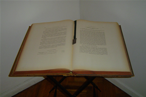

PREGUNTAS FRECUENTES

¿QUÉ ES LA SUCESIÓN?
La sucesión es la transmisión de los derechos activos y pasivos que conforman la herencia del fallecido al cónyuge sobreviviente o descendientes o ascendientes de la persona muerta, y los instituidos por testamento realizado por la persona antes de morir.
HERENCIA: Está formada por todos los bienes y deudas que forman el patrimonio del fallecido. El heredero sólo es responsable por el pago de las deudas hasta el valor de los bienes existentes en la sucesión. De esta manera la ley garantiza el patrimonio personal del heredero que así no se ve comprometido por la aceptación de una herencia con más deudas que bienes. Esto se llama Beneficio de inventario.¿CÓMO SE DESIGNA A LOS HEREDEROS?
Los herederos son designados por la ley o por testamento. Nuestro país admite las dos formas.
Los designados por la ley: son a) herederos forzosos a saber hijos, cónyuge o padres del fallecido. Estos no pueden ser privados de la herencia mediante un testamento.
b) herederos no forzosos Cuando no hay herederos forzosos ni testamentarios, son los parientes del fallecido hasta el cuarto grado, a saber hermanos, sobrinos, tíos y primos.Los designados por testamento: son los herederos testamentarios aquellos herederos instituidos por la persona en vida, o puede nombrar legatarios, lo que se produce cuando el testador le deja un legado, un bien determinado.
TESTAMENTO: hay tres tipos de testamento:
- Ológrafo: es hecho íntegramente de puño y letra de la persona en vida. Es simple, económico pero fácil de destruir y de modificar por terceros.
- Por Acto Público: es hecho ante escribano público mediante escritura pública y tres testigos. Es oneroso.
- Cerrado: es secreto, firmado por el testador y confeccionado en un pliego, el cual debe estar en un sobre cerrado que debe entregarse al Escribano Público en presencia de cinco testigos, expresando que es un testamento. El escribano público dará fe de la presentación y labrará un acta en la cubierta del sobre firmando este el testador, los cinco testigos y el Escribano. Es oneroso.
¿SE DEBE INICIAR SUCESIÓN SI HAY UN TESTAMENTO?
Siempre se debe iniciar la sucesión si hay un testamento ante el juez que corresponda al último domicilio del testador. En este caso se denomina “sucesión testamentaria.”
¿PUEDE EL TESTADOR DISPONER DE TODO SU PATRIMONIO?
El testador puede solamente disponer del porcentaje que indica la ley sin afectar la legítima, esto es la parte de los bienes que le corresponden por ley a los herederos forzosos.
Por lo tanto en caso de existir: a) descendientes (o sea hijos del fallecido), el testador sólo puede disponer para los herederos testamentarios del 20% del patrimonio relicto.
b) ascendientes o sea ambos padres del difunto o solo uno de ellos, el testamento puede abarcar hasta el 33,4%
c) cónyuge, el testador dispone del 50%.
d) herederos no forzosos, el testamento puede incluir la totalidad de los bienes de la herencia.BIENES GANANCIALES Y PROPIOS.
Los bienes gananciales son los bienes que forman parte de la “sociedad conyugal”, o sea los bienes que se adquieren mientras el fallecido haya estado casado.
- El cónyuge que sobrevive al otro recibirá la mitad de los bienes como parte de la sociedad conyugal, no como heredera/o. Y la totalidad, o sea el 100% si no hay descendientes ni ascendientes (ni hijos ni padres del fallecido).
- Si hay hijos la otra mitad se divide entre la cantidad de hijos por partes iguales.
- Si no hay hijos pero sobreviven los padres del difunto, reciben el 50% de la herencia cada uno, o si vive solo uno de ellos recibe la totalidad.
- Si existen cónyuge y ascendientes, recibe el cónyuge el 50% como socio de la “sociedad conyugal” y el otro 50% se dividen en partes iguales entre los ascendientes y el cónyuge.
Los bienes propios son los bienes que poseen cada cónyuge antes del matrimonio, o los recibidos como legado o donación aún después del matrimonio.
- Si hay hijos y cónyuge sobreviviente heredan todos por partes iguales.
- Si hay cónyuge y padres del difunto heredan el cónyuge el 50% y la otra mitad los padres.
- Si no hay cónyuge pero hay hijos y ascendientes, reciben la totalidad los hijos.
- Cuando no hay ni ascendientes ni descendientes ni cónyuge del fallecido, lo heredan su hermanos, si los hay, sino sus tíos y sobrinos, y si no los tiene sus primos.
- Si tampoco hay testamento, y la herencia se encuentra vacante, lo hereda el Fisco.
¿ QUE ES EL DERECHO DE REPRESENTACIÓN?
Si la persona que debe heredar falleció, se le reconoce el derecho a sus descendientes de colocarse en el lugar del difunto y de esta forma perciben lo que le hubiera correspondido a la persona muerta. Por ejemplo: Si la sucesión es del abuelo, o sea porque éste murió, y anteriormente había muerto el padre, le corresponde la herencia por representación (de su padre premuerto) a su nieta en la exacta proporción del representado.
¿QUÉ SUCEDE RESPECTO DE LAS DONACIONES REALIZADAS A FAVOR DE LOS HIJOS O DE TERCEROS?
La ley autoriza a la donación como una anticipación a la porción de la herencia respecto de los herederos forzosos, o sea deberá el donado tomar menos en la sucesión por lo que tomó demás en vida del fallecido.
Si las donaciones fueron hechas a favor de terceros, deben devolverse sólo en la medida en que afectan la porción legítima de los herederos.¿CUÁNTO TIEMPO TARDA UNA SUCESIÓN?
Al iniciarse la sucesión en el Juzgado sorteado, para todo su trámite de normal procedimiento y sin que haya complicaciones de ninguna índole (Como pudiera ser la existencia de incapaces entre los herederos, o diferencias en los nombres, por ejemplo), se demora 6 (seis) meses aproximadamente hasta la declaratoria de herederos.
¿QUÉ ES LA DECLARATORIA DE HEREDEROS?
Es la resolución que dicta el Juez del sucesorio en la que se declara quiénes se han presentado en la sucesión y han acreditado su vínculo hereditario mediante la presentación de las partidas respectivas.
Dicha declaratoria es muy necesaria porque acredita frente a terceros la condición de heredero respecto del difunto.
|
|
|
|
||